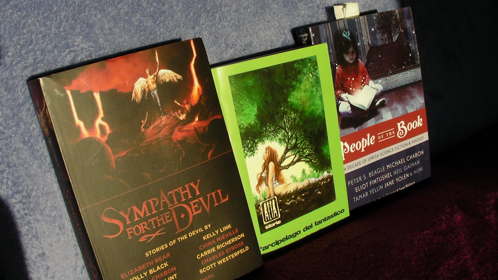

|
|
Translations, Reprints and Steampunk Games
I've been awfully remiss about letting you all know, Constant Readers, about what's going on over here at the Vast Publishing Empire that is Benjamin RosenbaumTM® AG , Inc., LLC.
Recent highlights:
- "The House Beyond Your Sky" was translated by Florence Dolisi as "La maison derriére la ciel" and published in Angle Mort, a newish French webzine patterned on the Lightspeed model.
- "A Siege of Cranes" was translated as"Un volo di gru" by Davide Marra (who has a story in the same issue, "Pianeta Rossa", in which Garibaldi and Belzoni meet on Mars!), in ALIA 6.
Interestingly mine is the only story in the issue from the USA; there are also seven original stories from Italy, and 14 other translations -- 6 from Japan, 4 from Singapore, 3 from China, and one from Spain. I don't know if this is a special issue, or if Alia always mostly looks eastward for inspiration.
- "Biographical Notes to 'A Discourse on the Nature of Causality, with Air-Planes', by Benjamin Rosenbaum" was reprinted in Rachel Swirsky & Sean Wallace's Jewish SF/F anthology, People of the Book, and "The King of the Djinn" (by me and David Ackert) was reprinted in Tim Pratt's anthology Sympathy for the Devil.

- My Danish collection, Start uret, has gone to a second printing! This is the first time, I believe, that anything of mine has gone to a second printing!
Admittedly the first printing was only 100 copies. But then, there are only 6 million Danish speakers worldwide, so that's the equivalent of 8,333 copies in English. In translator Lise Andreasen's words, it is selling like warm bread.
- I posted some time ago about Todd Sanders' miraculous hand-crafted artisanal editions of A Siege of Cranes, "Biographical Notes to 'A Discourse on the Nature of Causality, with Air-Planes' by Benjamin Rosenbaum", and The House Beyond Your Sky.
Now he has created a line of steampunk games based in part on the aforementioned "Biographical Notes..." (I have to tell you, when I wrote this story I had no idea I was committing steampunk); they include Aether Captains: Pirates and Traders, Aether Captains: Triad, Aether Captains: Dread Supremacy, and Aether Captains: Capek Golems. I believe Aether Captains: The Great Race is still in progress.

These are Creative Commons'd, DIY, free Print and Play games -- you can download and print out the PDFs, assemble dice and tokens, and start hunting airship pirates in the skies over Arkady.
It seems Grigor Karthagonov, carefree jackanape though he may be, has time to captain an airship while also expounding his philosophical typology of action and motive (or perhaps this Karthagonov is a descendant of the philosopher...)
{kind=link}
{kind=link}
Wow! I can't wait to take a look at that game.
...and a friend of mine has a little Danish. I may have to send her some warm, printed bread.
Posted by: Dan Percival at April 7, 2011 07:27 PMOh, even better! It's a solitaire game! (Getting a game group together is hopeless for me these days).
AND it asks for a d12, the best die of them all. AWESOME.
Posted by: Dan Percival at April 7, 2011 08:49 PMWhich one are you talking about, Dan? I think there's a variety, I forget which one was the solitaire game...
Posted by: Benjamin Rosenbaum at April 8, 2011 08:14 AMthanks ben for posting this. the original that started it all http://www.boardgamegeek.com/boardgame/86003/aether-captains - Aether Captains is solo as is Pirates and Traders and one of the games in Triad. and my latest, just posted - http://www.boardgamegeek.com/boardgame/96703/aether-captains-clockwork-cabal - Clockwork Cabal, is solo also and uses a d12, which is my favorite underrated die as well.
Posted by: Todd Sanders at April 9, 2011 05:21 PMand yes i think this Grigor is a descendant of your Grigor. jackanapes are notoriously bad philosophers.
Posted by: Todd Sanders at April 9, 2011 05:29 PMAether Captains: Capek Golems won first place in the Quick Print and Play contest tonight over on boardgamegeek.com. i could not be more pleased
Posted by: Todd Sanders at April 12, 2011 08:51 AM